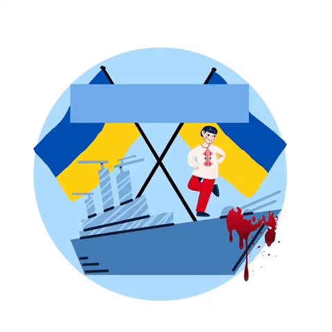
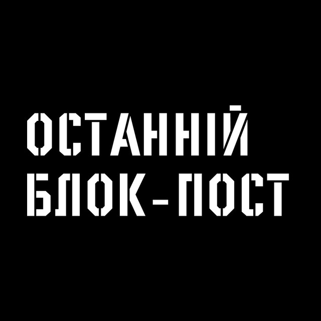
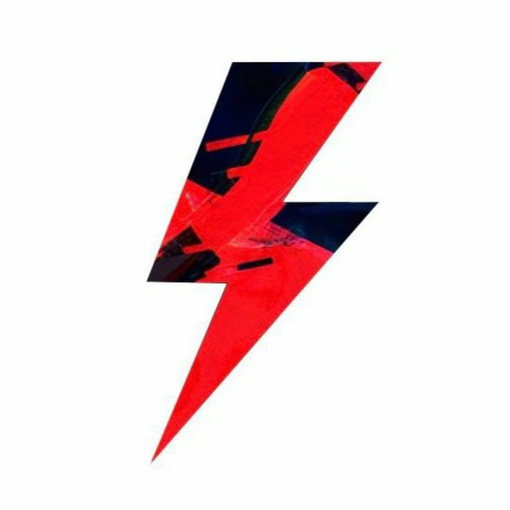
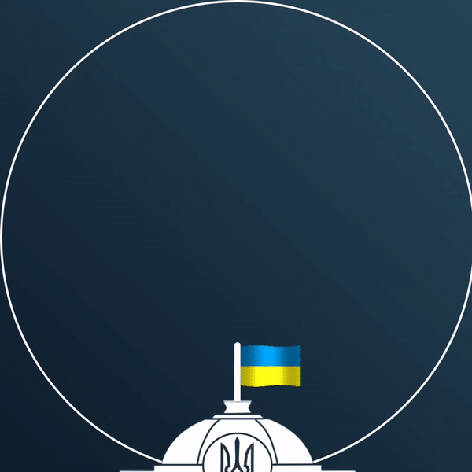
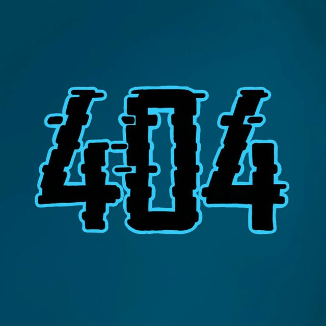

Сергій Стерненко 🇺🇦 Складний канал для складних часів. Тут долар по 5, Медведчук сидить пожиттєво, а кожен росіянин має свій клаптик землі і сосновий бушлат.

Русский Корабль Иди Нах*й
Новости о которых должны знать все. Если ты русский иди нах*й!
Телеграмна служба новин
Оперативні новини України — 24/7. Слава Україні! 🇺🇦
Так люблю той Львів (Lviv, Ukraine)
Офіційна сторінка відомої львівської спільноти.

Останній Блокпост 🛡
Волонтерський центр "Останній Блокпост" публікує хроніку збройної та інформаційної боротьби з російським агресором, а також організовує адресну допомогу захисникам України.
Телебачення Торонто
Оперативна інформація про напад росії на Україну
Grebenkos
Всім привіт, мене звати лєра і тут МИ НЕНАВИДИМО РУСНЮ

Топор Live
Топор Live с быстрыми новостями.

Верховна Рада ЗМІ
Новостной не официальный канал Верховной Рады Украины. На этом канале вы первыми увидите самые свежие и уникальные новости, которые ещё не попали в издания к журналистам.

Not Found
А це мій канал ). У мене тут вже 11 підписників, сюди деколи скидують меми.
Тут канали по КіберБульБулінгу рашистів
Підт.
Логотип
Назва
Опис
Посилання
DDOS по країні СЕПАРІВ (Кібер-Козаки)
Тут кібер буль булять рашистські сайти
IT ARMY of Ukraine
Тут тоже цікаво
CyberpoliceUA
Офіційний Телеграм-канал Департаменту кіберполіції 🇺🇦
Спец-відділ «Філін»
Хакери, ламери та програмісти. Проти ворогів - Разом. Росія та Беларусь гори в пеклі Не знаю чому але мене сюди запросили )